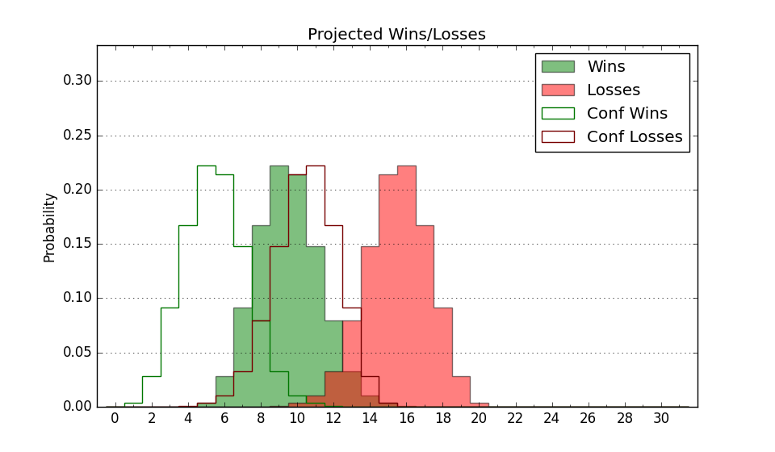

| Home | Game Probabilities | Conferences | Preseason Predictions | Odds Charts | NCAA Tournament |
| City: | Staten Island, New York | |
| Conference: | Northeast (8th)
| |
| Record: | 1-3 (Conf) 5-8 (Overall) | |
| Ratings: | Comp.: -20.2 (347th) Net: -21.5 (348th) Off: 87.0 (361st) Def: 108.5 (232nd) SoR: 0.0 (160th) |
| Remaining | ||||||
|---|---|---|---|---|---|---|
| Date | Opponent | Win Prob | Pred. | |||
| 1/20 | St. Francis PA (330) | 56.5% | W 62-61 | |||
| 1/24 | @ Mercyhurst (349) | 35.8% | L 57-60 | |||
| 1/26 | @ St. Francis PA (330) | 27.6% | L 58-64 | |||
| 1/30 | @ Stonehill (281) | 18.8% | L 55-64 | |||
| 2/1 | Le Moyne (344) | 62.7% | W 64-61 | |||
| 2/6 | LIU Brooklyn (306) | 48.9% | L 56-57 | |||
| 2/8 | @ Fairleigh Dickinson (321) | 26.1% | L 61-68 | |||
| 2/13 | @ Le Moyne (344) | 33.0% | L 60-65 | |||
| 2/20 | Stonehill (281) | 44.0% | L 59-60 | |||
| 2/22 | @ Chicago St. (355) | 45.0% | L 58-59 | |||
| 2/27 | @ LIU Brooklyn (306) | 21.9% | L 53-61 | |||
| 3/1 | Central Connecticut (217) | 29.0% | L 53-58 | |||
| Previous | Game Score | |||||
| Date | Opponent | Win Prob | Result | Off | Def | Net |
| 11/6 | @Rutgers (84) | 2.5% | L 52-75 | -5.0 | 12.4 | 7.4 |
| 11/13 | @St. John's (28) | 0.8% | L 45-66 | 1.2 | 18.4 | 19.6 |
| 11/16 | @Seton Hall (174) | 7.8% | L 28-54 | -28.9 | -2.5 | -31.3 |
| 11/19 | @Boston University (313) | 23.1% | W 60-58 | 11.4 | 5.3 | 16.7 |
| 11/26 | @Georgetown (87) | 2.7% | L 41-66 | -4.0 | 7.2 | 3.2 |
| 12/4 | Coppin St. (362) | 81.2% | W 65-52 | 16.9 | -9.5 | 7.3 |
| 12/8 | @Md Eastern Shore (360) | 50.6% | W 63-61 | 6.0 | -4.4 | 1.6 |
| 12/14 | @NJIT (353) | 42.1% | W 50-43 | -13.6 | 29.2 | 15.6 |
| 12/18 | Manhattan (299) | 47.9% | L 66-80 | 2.1 | -24.8 | -22.7 |
| 1/3 | Chicago St. (355) | 73.6% | L 52-64 | -9.8 | -16.9 | -26.6 |
| 1/5 | Fairleigh Dickinson (321) | 54.6% | L 59-71 | -16.9 | -4.8 | -21.7 |
| 1/10 | @Central Connecticut (217) | 10.7% | W 62-57 | 16.4 | 8.8 | 25.2 |
| 1/18 | Mercyhurst (349) | 65.5% | L 65-69 | 4.4 | -19.2 | -14.8 |
| Stats & Trends | |||||
|---|---|---|---|---|---|
| Current | Day | Week | Month | Season | |
| Composite | -20.2 | -1.2 | -1.3 | -3.5 | -6.0 |
| Comp Rank | 347 | -1 | -1 | -11 | -30 |
| Net Efficiency | -21.5 | -1.3 | -1.4 | -3.7 | -- |
| Net Rank | 348 | -2 | -1 | -18 | -- |
| Off Efficiency | 87.0 | +0.7 | +0.7 | +0.7 | -- |
| Off Rank | 361 | -- | -- | -1 | -- |
| Def Efficiency | 108.5 | -2.0 | -2.0 | -4.4 | -- |
| Def Rank | 232 | -40 | -41 | -74 | -- |
| SoS Rank | 341 | -25 | -18 | -104 | -- |
| Exp. Wins | 9.5 | -1.0 | -1.0 | -1.9 | -1.9 |
| Exp. Conf Wins | 5.5 | -1.0 | -1.0 | -1.9 | -3.0 |
| Conf Champ Prob | 0.3 | -1.0 | -0.7 | -4.5 | -15.4 |

| Advanced Stats | ||
|---|---|---|
| Stat | Value | Rank |
| Off Eff FG % | 0.391 | 364 |
| Off Ast Ratio | 0.120 | 325 |
| Off ORB% | 0.280 | 207 |
| Off TO Rate | 0.159 | 249 |
| Off FT Ratio | 0.284 | 298 |
| Def Eff FG % | 0.548 | 312 |
| Def Ast Ratio | 0.164 | 312 |
| Def ORB% | 0.253 | 64 |
| Def TO Rate | 0.160 | 101 |
| Def FT Ratio | 0.465 | 355 |